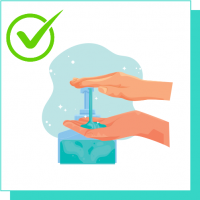
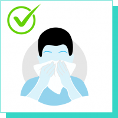
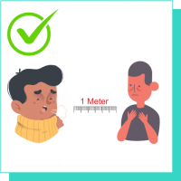
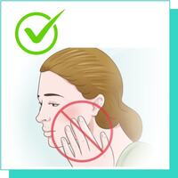
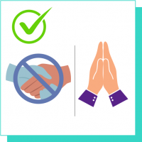
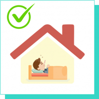

About
COVID19 Patients Monitor
An application to monitor the COVID affected patients who has been isolated in their home and
monitoring them remotely. The patients are undergoing treatment from their home since there was
scarcity for the beds in the hospitals.
The application should send live monitoring data from the monitoring devices to the doctor portal(Please
mock the data through some easy source). i.e. If the pulse rate or blood pressure rate, body temperature
not inline with the recommendable range should send the alert to the doctors.
Admin Modules to manage the doctor profiles patient profiles monitored data.
Prevention
Basic protective measures against the coronavirus

Wash your hands regularly with soap and water (for at least 20 seconds), or clean them with alcohol-based hand sanitizers

Cover your mouth and nose when coughing or sneezing; practice respiratory etiquette (for example, by coughing into a flexed elbow or in tissue paper; discard the used tissue paper in a closed dustbin)

Maintain at least 1 meter distance between you and people coughing or sneezing (Physical distancing)

Avoid touching your face

Say yes to Namaste and No to handshakes

Stay home if you feel unwell
Stay aware of the latest information on the COVID-19 outbreak, available on the WHO website and through your national and local public health authority. Most people who become infected experience mild illness and recover, but it can be more severe for others. Take care of your health and protect others by doing the following:
Wash your hands frequently: Regularly and thoroughly clean your hands with an alcohol-based hand rub or wash them with soap and water.
Maintain social distancing: Maintain at least 1 metre (3 feet) distance between yourself and anyone who is coughing or sneezing.
Avoid touching eyes, nose and mouth: Why? Hands touch many surfaces and can pick up viruses. Once contaminated, hands can transfer the virus to your eyes, nose or mouth. From there, the virus can enter your body and can make you sick
Practice respiratory hygiene: Make sure you, and the people around you, follow good respiratory hygiene. This means covering your mouth and nose with your bent elbow or tissue when you cough or sneeze. Then dispose of the used tissue immediately.
If you have fever, cough and difficulty breathing, seek medical care early: Stay home if you feel unwell. If you have a fever, cough and difficulty breathing, seek medical attention and call in advance. Follow the directions of your local health authority.
What is a Coronavirus?
Coronaviruses are a large family of viruses which may
cause illness in animals or humans. In humans, several
coronaviruses are known to cause respiratory infections
ranging from the common cold to more severe diseases
such as Middle East Respiratory Syndrome (MERS) and
Severe Acute Respiratory Syndrome (SARS). The most
recently discovered coronavirus called as 2019 Novel
Coronavirus (2019-nCoV) causes coronavirus disease
COVID-19.
What are the symptoms of COVID-19 ?
The most common symptoms of COVID-19 are fever,
tiredness, and dry cough. Some patients may have aches
and pains, nasal congestion, runny nose, sore throat or
diarrhea. These symptoms are usually mild and begin
gradually. Some people become infected but don’t
develop any symptoms and don’t feel unwell. Most
people (about 80%) recover from the disease without
needing special treatment.
Who should get tested?
As per guidelines, if you develop the acute onset of fever
and symptoms of respiratory illness, such as cough or
shortness of breath you should visit your nearest health
facility and the doctor will decide if you need to be tested
for COVID-19, depending upon your history of travel to
affected countries or contact with any suspects.
What are the documents needed for (COVID -19) Testing?
Patient Information Form (Patient Proforma, to be
provided by SRL Lab personnel) duly filled, along with the
referring doctor’s prescription, also Govt. photo-id
(Aadhaar card/ VoterId/ Passport) to support the current
address and contact number of the suspect patient to be
provided at the time of sample collection. These are
mandatory requirements defined by Govt. of India
without which testing of COVID 19 is not allowed.
How long does the virus survive on surfaces ?
It is not yet clear that how long the COVID-19 survives on surfaces, however, it seems to act like other coronaviruses. Preliminary information on the COVID-19 virus have suggested that it may persist on surfaces for few hours to several days. Though it can vary under different environmental conditions such as type of surface, temperature or the humidity. Surface cleaning should be done with simple disinfectant to kill the virus. Clean your hands with an alcohol-based hand rub or wash them with soap and water. Avoid touching your mouth, eyes or nose.
What kind of Sample is needed for Testing ?
Nasopharyngeal and Oropharyngeal swab will be
collected by taking due precautions
What Methodology is being used for testing?
RT PCR, as recommended by ICMR.
What's the sample collection and transportation process ?
The sample will be collected in a viral transport medium
(VTM) to maintain the stability of the sample & get
transported in a cold chain. Our specially trained
phlebotomists collect the samples by following all
biosafety precautions and using personal protective
equipment.
By when can I get my report?
We will share all patients’ reports with defined Govt.
bodies as per the guidelines of Govt of India/ICMR.We will
upload your report on our website www.srlworld.com
and mobile app, subject to govt rules and regulations. You
can access your report from Website /Mob App using
login id and password provided.
How long will it take to get my report?
24 hours after you provide your sample at lab.
What is the Price of COVID 19 Test ?
How do I interpret my report ?
You are advised to visit your referring doctor/hospital
with the report for further advice.
Can I catch COVID-19 from my pet?
There is no documented evidence that a dog, cat or any pet can transmit COVID-19. As stated, COVID-19 can mainly spread through droplets breathed out (blow out) when an infected person sneezes or coughs. To protect yourself, wash your hands frequently and properly.
Who is at risk of developing severe illness ?
COVID-19 can affect anyone, but older people and individuals with underlying medical conditions (such as diabetes, lung diseases, high blood pressure, heart disease or malignancy) appear to develop serious illness more in comparison to others.